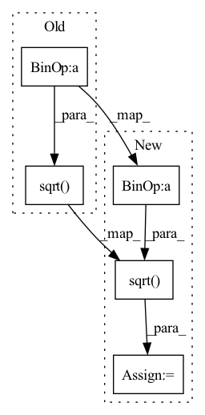

Pattern ID :491

Before Change
self.merge_count = int(math.log2(merge_count))
self.norm_factor = math.sqrt(
math.sqrt(self.config.hidden_size // self.config.heads))
self.qkv_merging = qkv_merging
if self.config.scale_attn_by_inverse_layer_idx is True:
After Change
self.q_groups = q_groups
self.merge_count = int(math.log2(merge_count))
self.norm_factor = math.sqrt(self.config.hidden_size // self.config.heads)
if not config.use_mup:
self.norm_factor = math.sqrt(self.norm_factor)
self.qkv_merging = qkv_merging
if self.config.scale_attn_by_inverse_layer_idx is True:
In pattern: SUPERPATTERN
Frequency: 3
Non-data size: 5
Instances
Fragment ID: 1427413
Project Name: microsoft/deepspeed
Commit Name: d9b788d773ce97281ee63064cc99993cb82397e2
Time: 2022-12-28
Author: jerasley@microsoft.com
File Name: deepspeed/ops/transformer/inference/ds_attention.py
M Class Name: DeepSpeedSelfAttention
N Class Name: DeepSpeedSelfAttention
M Method Name: __init__(7)
N Method Name: __init__(7)
M Parent Class: nn.Module
N Parent Class: nn.Module
M File Name: deepspeed/ops/transformer/inference/ds_attention.py
N File Name: deepspeed/ops/transformer/inference/ds_attention.py
M Start Line: 64
M End Line: 65
N Start Line: 64
N End Line: 67
'>
Before Change
alphas_cumprod = diffusion.alphas_cumprod
alphas_cumprod_prev = F.pad(alphas_cumprod[:-1], pad=(1, 0), value=1.0)
self.register("sqrt_recip_alphas_cumprod", torch.sqrt(1.0 / alphas_cumprod))
self.register(
"sqrt_recipm1_alphas_cumprod", torch.sqrt(1.0 / alphas_cumprod - 1)
)
After Change
alphas_cumprod = diffusion.alphas_cumprod
alphas_cumprod_prev = F.pad(alphas_cumprod[:-1], pad=(1, 0), value=1.0)
sqrt_recip_alphas_cumprod = torch.sqrt(1.0 / alphas_cumprod)
self.register("sqrt_recip_alphas_cumprod", sqrt_recip_alphas_cumprod)
sqrt_recipm1_alphas_cumprod = torch.sqrt(1.0 / alphas_cumprod - 1)
self.register("sqrt_recipm1_alphas_cumprod", sqrt_recipm1_alphas_cumprod)
// calculations for posterior q(x_{t-1} | x_t, x_0)
'>
Fragment ID: 1427412
Project Name: archinetai/audio-diffusion-pytorch
Commit Name: a009473c67fe6f2f852bbf6ce03d6715e5fd36c7
Time: 2022-07-21
Author: flavio.schneider.97@gmail.com
File Name: audio_diffusion_pytorch/diffusion/ddpm.py
M Class Name: DiffusionSampler
N Class Name: DiffusionSampler
M Method Name: __init__(2)
N Method Name: __init__(2)
M Parent Class: nn.Module
N Parent Class: nn.Module
M File Name: audio_diffusion_pytorch/diffusion/ddpm.py
N File Name: audio_diffusion_pytorch/diffusion/ddpm.py
M Start Line: 97
M End Line: 119
N Start Line: 104
N End Line: 124
'>
Before Change
self.register("alphas_cumprod", torch.cumprod(self.alphas, axis=0))
self.register("sqrt_alphas_cumprod", torch.sqrt(self.alphas_cumprod))
self.register(
"sqrt_one_minus_alphas_cumprod", torch.sqrt(1.0 - self.alphas_cumprod)
)
self.register(
"loss_weight",
(loss_weight_k + self.alphas_cumprod / (1 - self.alphas_cumprod))
After Change
self.register("alphas_cumprod", alphas_cumprod)
sqrt_alphas_cumprod = torch.sqrt(alphas_cumprod)
self.register("sqrt_alphas_cumprod", sqrt_alphas_cumprod)
sqrt_one_minus_alphas_cumprod = torch.sqrt(1.0 - alphas_cumprod)
self.register("sqrt_one_minus_alphas_cumprod", sqrt_one_minus_alphas_cumprod)
loss_weight = (
loss_weight_k + alphas_cumprod / (1 - alphas_cumprod)
) ** -loss_weight_gamma
'>
Fragment ID: 1427410
Project Name: archinetai/audio-diffusion-pytorch
Commit Name: a009473c67fe6f2f852bbf6ce03d6715e5fd36c7
Time: 2022-07-21
Author: flavio.schneider.97@gmail.com
File Name: audio_diffusion_pytorch/diffusion/ddpm.py
M Class Name: Diffusion
N Class Name: Diffusion
M Method Name: __init__(2)
N Method Name: __init__(2)
M Parent Class: nn.Module
N Parent Class: nn.Module
M File Name: audio_diffusion_pytorch/diffusion/ddpm.py
N File Name: audio_diffusion_pytorch/diffusion/ddpm.py
M Start Line: 45
M End Line: 56
N Start Line: 45
N End Line: 60